好，我们正式开启本次课程。本次课程主题：为什么要学少儿编程。咱们都是新入职的老师，这节课的定位，是帮大家打好编程认知的地基。它不是让大家直接去网上复制通用话术，拿生硬的术语或者大白话直接讲给家长。我们要学会结合咱们的课程体系，把底层逻辑吃透，转化成家长听得懂的表达。这里跟大家明确一个核心：家长很多时候，是看重编程带来的附加价值才会产生兴趣 —— 比如能不能改善孩子的学习习惯、锻炼逻辑思维、和校内语文数学形成联动。我们吃透这些底层认知，最终目的，是拥有独立回应、解决家长各类异议的能力。不管家长抛出什么疑问，你都能讲明白编程到底是怎么帮到孩子的。只有把「为什么学少儿编程」的底层逻辑吃透，我们才能从容应对家长的各种提问，而不是只会套固定句子。今天课程分成两大板块： 第一板块：编程的基础认知 第二板块：为什么要学习少儿编程
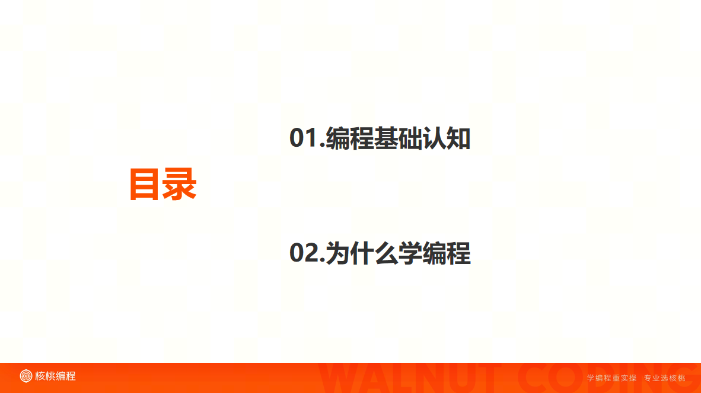
我们来看本节课的目录。本节课一共两大板块： 第一板块，编程的基础认知；第二板块，为什么去学少儿编程，从内部因素和外部因素两个方向去讲。来看一道题，第二部分「为什么要学编程」，分为哪两类因素？
互动题
【单选】第二部分「为什么要学编程」，分为哪两类因素？
- A. 外部因素和内部因素
- B. 政策因素和市场因素
- C. 家长因素和孩子因素
- D. 短期因素和兴趣因素
选错后：仅弹正确提示继续
好，我们进入第一个板块，编程基础认知，先回答一个最基本的问题：什么是编程。
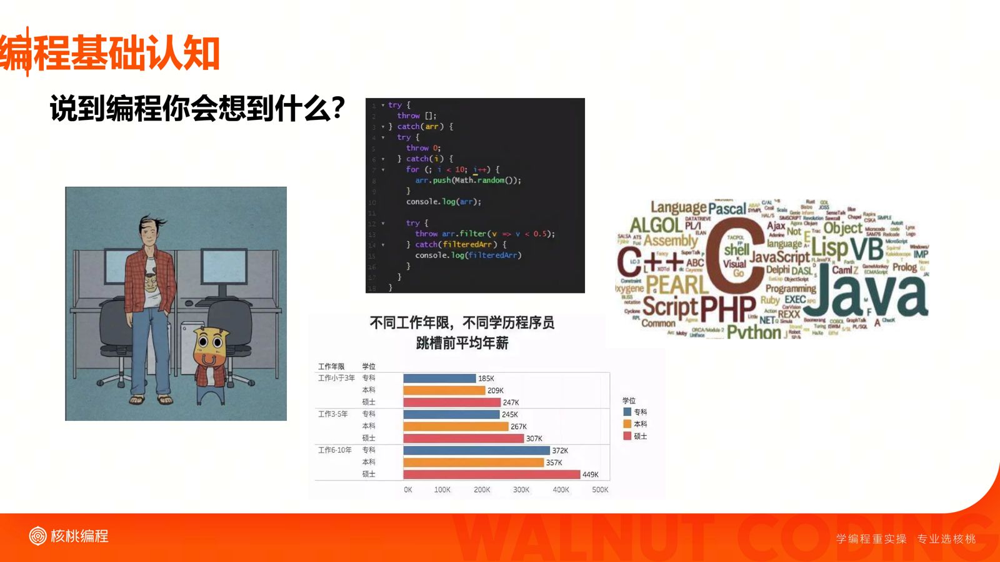
说到编程，大家脑子里会冒出什么画面？是穿格子衬衫、在格子间里埋头敲代码的程序员？是屏幕上密密麻麻的代码，还是右边这一大堆编程语言的名字？再看下面这张图，不同工作年限、不同学历的程序员，跳槽前的平均年薪都不低，工作六到十年的硕士，平均能到四十四点九万。所以很多人对编程的第一印象就是技术宅、高收入。这些印象没有错，但大家要注意，跟家长沟通的时候，千万别把学编程的价值落在将来当程序员、赚高薪上。家长最常见的反应就是：我家孩子又不当程序员。那编程和孩子到底有什么关系？我们接着往下看。
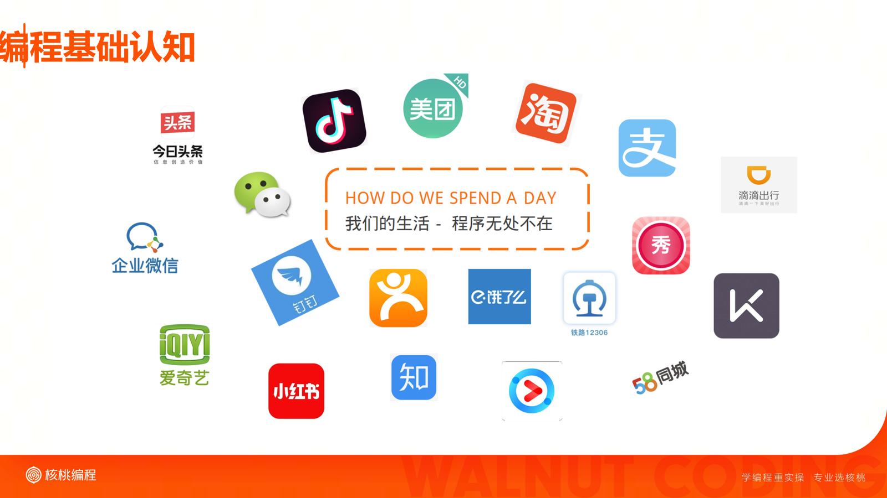
其实编程离我们一点都不远。图上这些图标，抖音、微信、淘宝、美团、支付宝、滴滴出行、铁路12306，都是我们每天在用的应用，它们全都是用编程做出来的。再比如咱们上班门口的打卡系统，背后也是一段程序。所以说，程序在我们的生活里无处不在。这一点在沟通里很好用：家长说孩子又不当程序员，学编程离我们太远，你就可以拿支付宝、滴滴打车、公司打卡这些例子告诉家长，程序就在生活里，孩子学编程，是在理解身边这个越来越数字化的世界。
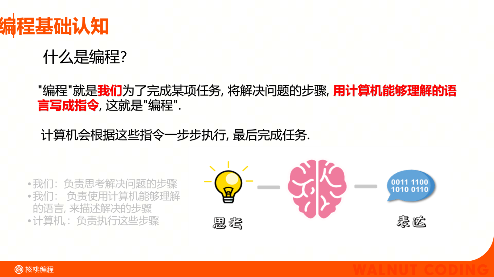
那到底什么是编程？大家看屏幕上这句定义：编程，就是我们为了完成某项任务，把解决问题的步骤，用计算机能够理解的语言写成指令。计算机会按照这些指令一步一步执行，最后完成任务。拆开来看，分工很清楚：我们负责思考解决问题的步骤，再用计算机能理解的语言把这些步骤描述出来；计算机负责执行。整个过程就是图上的思路，先思考，再整理思路，最后用计算机语言表达出来。所以编程语言和我们平时说的中文、英语一样，都是用来沟通的语言，只不过沟通的对象换成了计算机。而程序，就是用计算机能理解的语言写下的一连串命令。来看一道题，编程的本质是什么？
互动题
【单选】编程的本质是什么？
- A. 把解决问题的步骤，用计算机能理解的语言写成指令
- B. 用电脑打字、做表格
- C. 只有专业人员才能学的技能
- D. 记住大量英文单词
选错后：重讲本页重触发
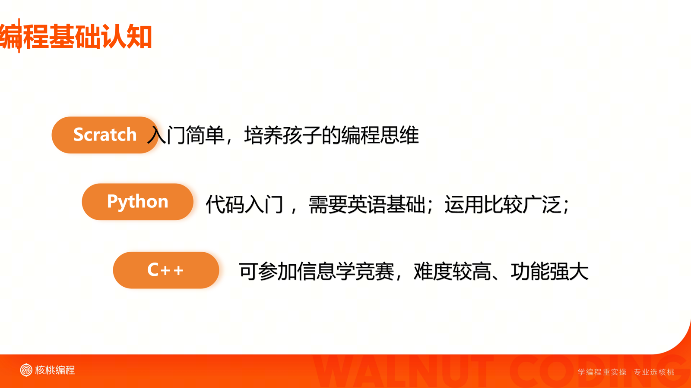
少儿编程语言，主要有三大类。第一类是图形化编程，也就是Scratch，入门简单，重点培养孩子的编程思维。第二类是Python，属于代码入门，需要一定的英语基础，应用范围比较广。第三类是C++，可以用来参加信息学竞赛，难度较高，功能也很强大。
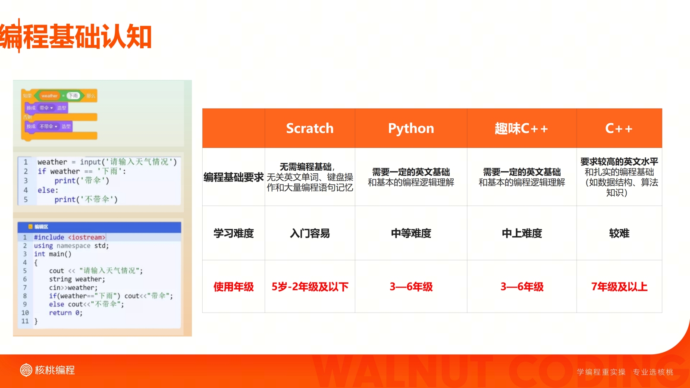
那不同年龄的孩子适合学什么？大家看这张表，我们按难度从低到高过一遍。Scratch不需要编程基础，不用记英文单词，也不需要大量的键盘操作和语句记忆，入门容易，适合五岁到小学二年级及以下的孩子。Python需要一定的英文基础和基本的编程逻辑理解，难度中等，适合小学三到六年级。趣味C++的基础要求和Python一样，难度中上，同样适合小学三到六年级。它用的是和C++相同的标准代码语言，有利于孩子以后参加竞赛。很多家长更认可C++，但低龄孩子直接学C++难度太大，容易产生畏难情绪，趣味C++正好解决了这个问题。最后是C++，要求较高的英文水平和扎实的编程基础，还要学数据结构和算法，难度较高，适合七年级及以上的孩子。续费沟通时，家长偶尔会问后面要不要换一种语言，大家就对照这张表，看孩子的年级和基础来匹配，不要凭感觉推荐。来看一道题，使用年级为3—6年级的编程语言是？
互动题
【多选】使用年级为3—6年级的编程语言是？
- A. Scratch
- B. Python
- C. 趣味C++
- D. C++
选错后：仅弹正确提示继续
在前面我们讲了什么是编程，也了解了不同年龄对应的编程语言。接下来，进入我们第二个板块：为什么要学编程。这也是家长问得最多的问题：“老师，学编程到底有什么好处？”同时，也是我们跟家长沟通、传递编程价值、强调它重要性最核心的部分。所以这块大家一定要认真听，吃透逻辑，后面跟家长沟通才能说得清楚、讲的更有画面感。
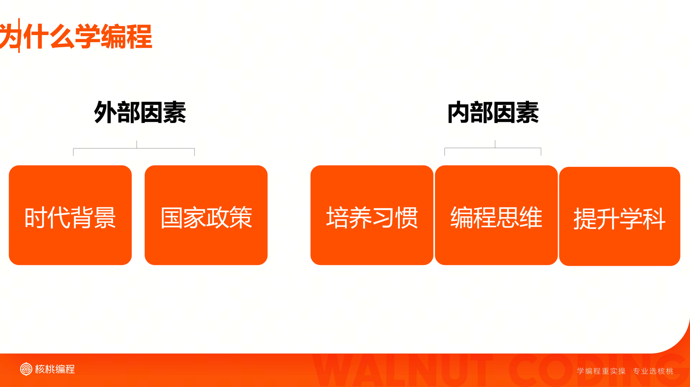
那我们在跟家长讲为什么学编程的时候，可以分成两大维度去梳理，逻辑会特别清晰，也好记、也好讲。一类是外部因素，一类是内部因素。外部因素，简单来说，就是大环境、政策、升学、赛道机会这些客观存在的红利和路径；内部因素，就是落在孩子自己身上的，思维、习惯、能力这些底层素养的提升。
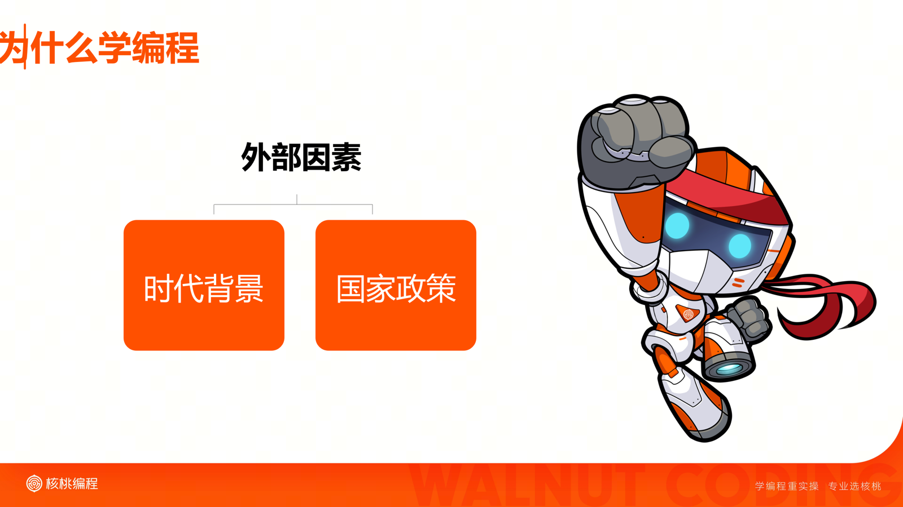
我们先来看一下外部因素。外部因素，核心就是国家层面的导向、针对少儿科技教育、编程教育出台的一系列政策文件。我们跟家长讲这部分，核心要传递一个信息：编程已经不是一个课外兴趣、可有可无的爱好，而是国家在大力推进的信息科技素养，是未来孩子需要具备的基础能力。
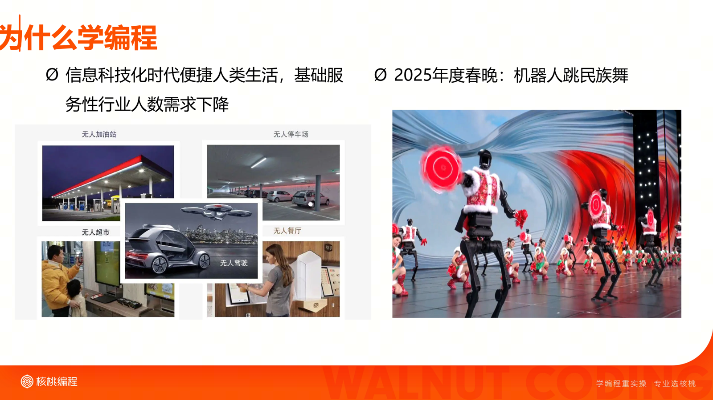
我们先来看第一个，我们如何去说明编程已经纳入到我们的生活当中了？其实我们可以举一些信息科技时代的一些场景，比如说像我们的无人加油站、无人超市、无人驾驶等等。那其实现在的这些基础的服务岗位的需求在下降，因为 AI、机器人进行了一部分的替代，这个也是大的趋势。那包括像 2025 年的时候也是第一年机器人走到春晚的舞台上面。那我们都知道春晚的话每一个节目每一个内容都是精心安排的，那其实这个也是一个非常大的一个信号。所以从这些案例我们已经能看到，无论是我们的数字化还是我们的智能化，其实都已经来到了我们的身边。那也就意味着现在教育的整个的方向，国家的发展是希望教育培养的人才和国家发展相匹配，所以你看国家的教育方向也在大力推进的信息科技素养。
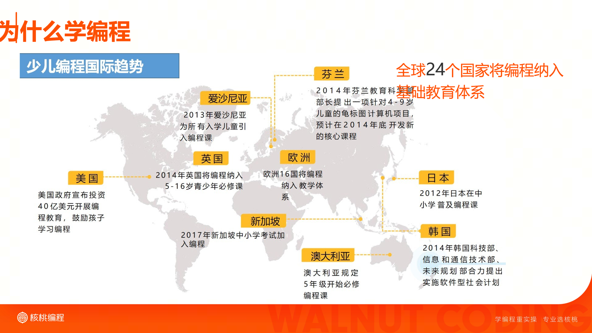
时代的趋势我们刚刚看完了，现在我们再来看看国际趋势。全球一共有 24 个国家，已经把编程纳入到基础教育体系当中。像日本早在 2012 年，就已经把编程纳入小学教育，还有很多国家也都在同步推进这件事。不难看出，编程教育早就已经是全球的大趋势。咱们中国，是在 2017 年出台了第一批少儿编程相关政策，所以不管是时代趋势，还是国际趋势，都再次印证了，少儿编程这个方向的发展潜力和重要性。
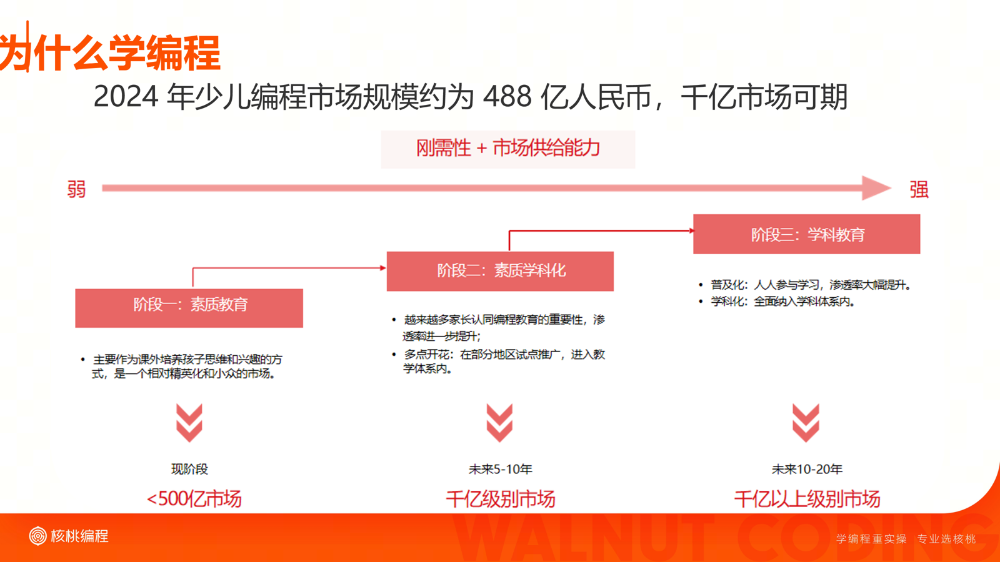
再从市场来看。2024年少儿编程市场规模大约488亿人民币，未来有望发展成千亿市场。整个行业会经历三个阶段。现阶段是素质教育，市场规模不到500亿，编程主要作为课外培养孩子思维和兴趣的方式，相对小众。未来5到10年，会走向素质学科化，越来越多家长认可编程教育，部分地区试点推广，进入教学体系，市场达到千亿级别。再往后10到20年，会升级到学科教育，人人参与学习，全面纳入学科体系，形成千亿以上的市场规模。跟家长沟通时，这条趋势线可以帮家长理解：现在坚持学，是走在前面，而不是跟风。
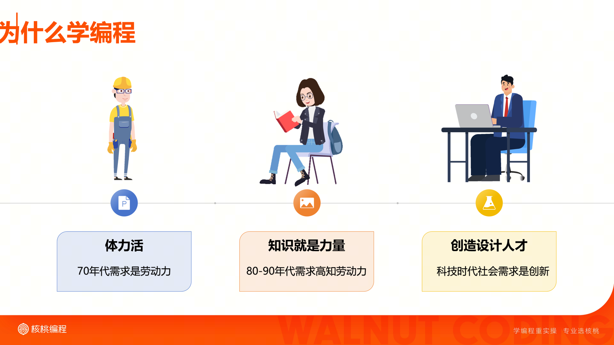
国家的发展方向、教育调整方向，核心都是匹配当下的人才需求。这也是少儿编程需求持续上涨的底层原因，我们可以顺着社会发展的阶段来看。70 年代，国家重点需要基础劳动力，核心看重体力、吃苦能力和实操手艺，所以技校、专项手艺是当时主流的培养方向。到了80、90年代，“知识就是力量” 成为共识，学历成为竞争的核心门槛，本科及以上高学历，是进入优质企业的重要加分项。发展到今天，本科已经是非常普遍的基础门槛，大家开始内卷更高学历。但我们也能看到一个现状：单纯的学历，已经不足以匹配国家的人才标准。不少高学历的人才，缺少创新能力和硬核专项技能。我们现在的大目标是科教强国、科技强国，需要大量创新型科技人才。人才需求发生转变，教育政策就会同步调整，最终目标，就是培养出适配时代的专项科技后备人才
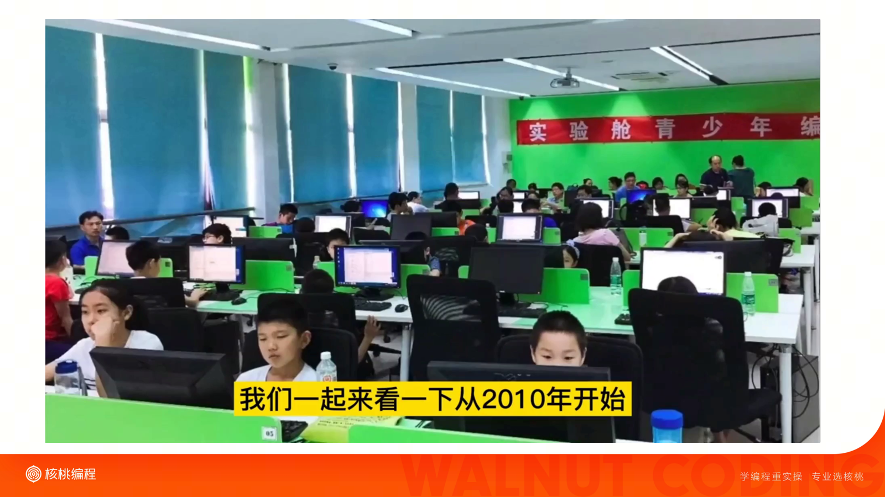
下面我们一起看一段视频。大家边看边留意，视频里提到国家在哪些时间节点，发布了哪些和编程教育相关的政策。
视频里的政策比较多，大家不需要逐条背下来，有个大概印象就可以。最需要记住的是两个时间点：2017年，国内编程教育开始落地；2022年，新课标改革，信息科技成为独立的课程科目。下一页我们用一张时间轴，把这条线串起来。
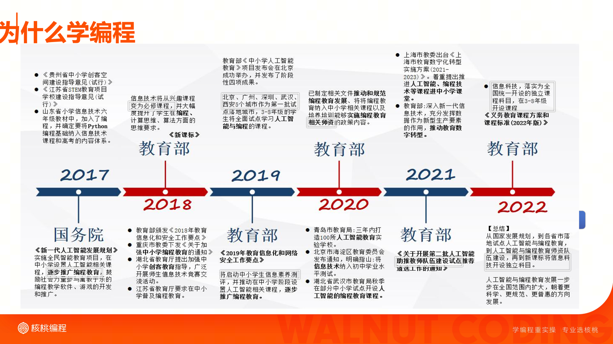
从这张时间轴可以看到，国内编程教育从2017年开始落地。那一年国务院发布了新一代人工智能发展规划，提出在中小学设置人工智能相关课程，逐步推广编程教育。核桃也正是在2017年成立的。之后教育部的相关政策不断调整完善：2018年，新课标提出信息技术从兴趣课程变为必修课程；2019年，北京、广州、深圳、武汉、西安5个城市作为第一批试点，3到8年级学生全面试点学习人工智能与编程课程。到了2022年，教育部发布义务教育课程方案和课程标准2022年版，信息科技成为全国统一开设的独立课程科目，在3到8年级开设。也就是说，编程已经从课外兴趣，变成了正式纳入考核的重要学科。
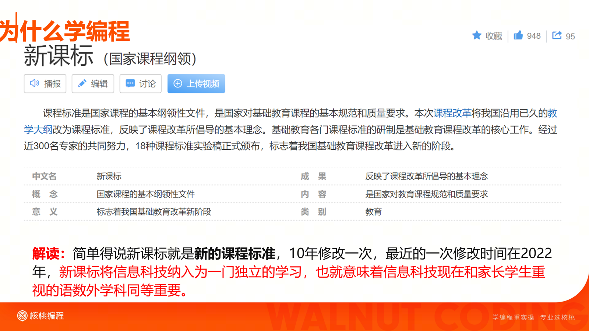
刚才多次提到新课标，不少伙伴对这个概念可能还有点模糊。新课标就是新的课程标准，是国家课程的基本纲领性文件。国家会根据当下发展需要的人才类型，来调整课程标准。它不会年年改，大约十年修改一次，最近一次就是在2022年。这次修改最关键的一点，是把信息科技列为一门独立的课程，这意味着信息科技现在和家长、学生重视的语数外学科同等重要。来看一道题，「新课标」多久改革一次？来看一道题，新课标大约多久修改一次？最近一次修改在哪一年？
互动题
新课标大约多久修改一次？最近一次修改在哪一年？
- A. 约5年一次，2019年
- B. 约10年一次，2022年
- C. 约10年一次，2017年
- D. 约5年一次，2022年
选错后：仅弹正确提示继续
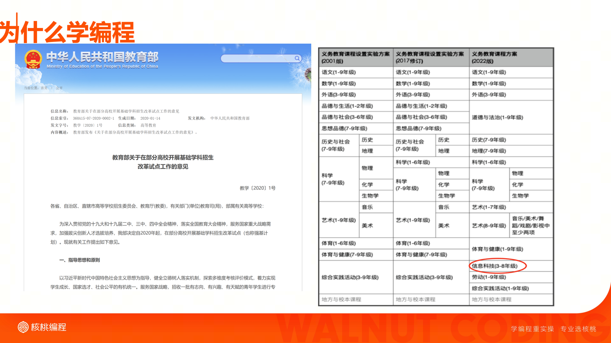
再看右边这张表，它把2001版、2017修订版和2022版的义务教育课程方案放在一起对比。大家回忆一下自己上学时的信息技术课是什么样？很多人还记得进机房要套鞋套，课上大多就是学学开机关机这类简单操作，一节课就过去了。那时候信息技术并没有单独列出来，只是放在综合实践活动里。再看2022版，红圈里的信息科技，单独成为3到8年级的一门课程。现在义务教育阶段的信息课，有明确的必修内容，比如正式学习算法、编写程序代码，这些都是新课标要求孩子必须掌握的。所以如果家长还以为学校的信息课只教开关机，大家就可以拿这张表告诉家长，现在早就不一样了。左边这份教育部关于强基计划的文件，我们后面讲升学时再细说。
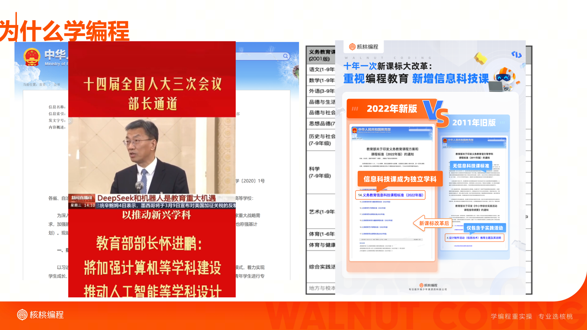
既然我们已经经历了十年一次的新课标大改革，信息科技也成了一门独立学科，那国家到底有多重视？再给大家普及一个知识点。在十四届全国人大三次会议的部长通道上，教育部部长怀进鹏提到，DeepSeek和机器人是教育的重大机遇，将加强计算机等学科建设，推动人工智能等学科设计。大家想一想，部长在这样的场合专门提到这个方向，能不能说明它的重要性？国家层面都这么重视，作为老师和家长，我们要不要重视起来？这也是和续费家长沟通时一个很实在的理由：孩子现在坚持学的，正是国家大力推动的方向。
接下来看升学的新趋势。左边这张地图，展示的是2025年哪些省份把信息科技纳入了中考：深红色的省份，信息科技是中考考试科目，直接计入中考总分；浅红色的省份，是中考考核科目，计入学生档案。右边是教育部的文件，全国一共有184所中小学入选人工智能教育基地名单，这些基地都以中小学信息科技、通用技术等课程为主要依托，去探索人工智能教育的新理念。看完这些，大家就能感受到，信息科技在升学里的分量正在持续提升。
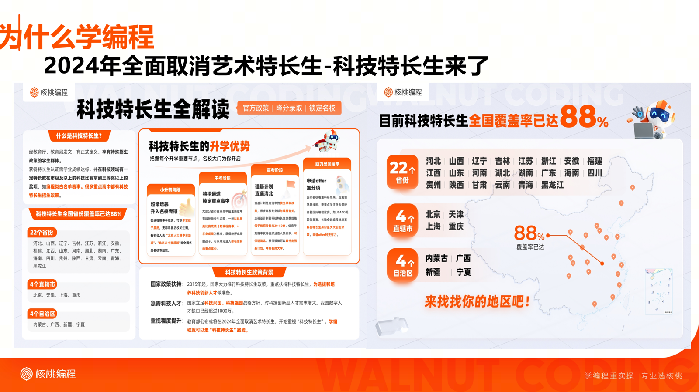
大家都熟悉特长生赛道，特长生主要分为三大类：艺术、体育、科技。我们先看政策变化，2024 年开始，艺术特长生的招生通道在收紧。以前很多家长等到孩子初高中成绩不理想，才临时突击学艺术，想用这个方式助力升学。这类情况越来越多，艺术类人才供给也逐渐饱和，所以现在政策提高了门槛，更看重长期深耕、科班积累的孩子，短期突击很难再走通。体育赛道同样有它的特点，属于金字塔型竞争，非常依赖先天天赋，能走到最后的孩子占比很小。而科技特长生，是现在国家重点扶持的新赛道。这张图上也能看到，目前科技特长生全国覆盖率已经达到 88%，覆盖 22 个省份、4 个直辖市、4 个自治区。它的优势在于，这条赛道可以贯穿小升初、初升高、高考，甚至未来留学、就业，是一条能够长期发展的特长路线，对比艺术、体育赛道，选择空间会更广。
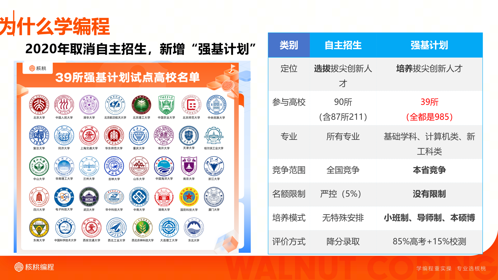
还有一个大家必须知道的政策，就是强基计划。2020年，国家取消了自主招生，新增了强基计划。一句话总结它的优势：它不只看高考分，还要看校测成绩，高考分数稍低的孩子也有机会考取名校，相当于存在降分录取的机制。左边是39所强基计划试点高校名单，全部都是九八五高校。右边的对比表里还有几点要注意：强基计划是本省竞争，名额没有限制，录取按百分之八十五的高考成绩加百分之十五的校测成绩评价，招生专业集中在基础学科、计算机类和新工科类。如果家长还是很难理解，我们可以这样讲：学编程，能帮孩子多一条进入重点院校的路，分数不够的时候，特长来补齐。来看一道题，对比表中，强基计划的评价方式是？
互动题
对比表中，强基计划的评价方式是？
- A. 降分录取
- B. 85%高考+15%校测
- C. 15%高考+85%校测
- D. 严控（5%）
选错后：仅弹正确提示继续
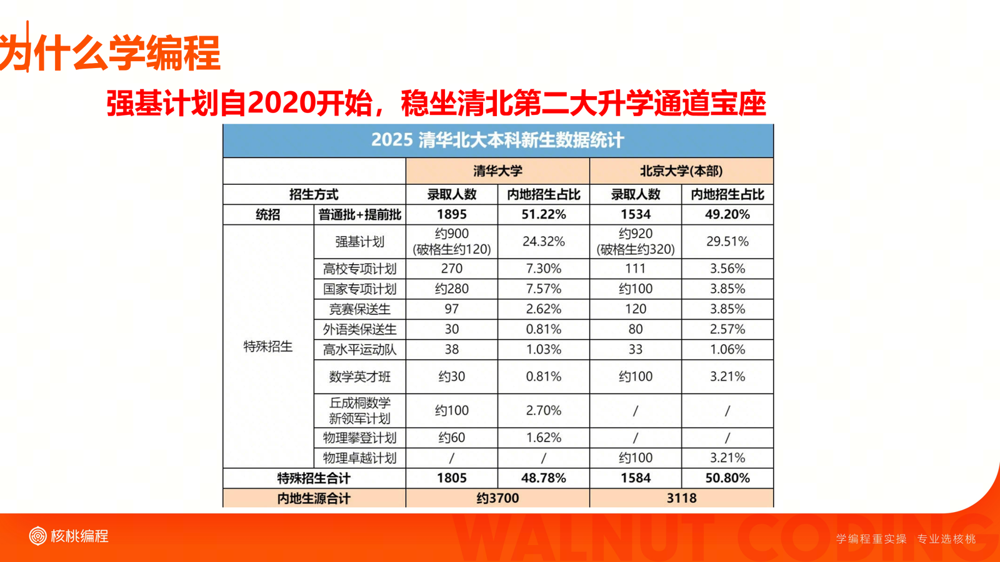
再看一组数据。这是2025年清华北大本科新生的统计，通过强基计划录取的人数，在清华内地招生中占比24.32%，在北大本部占比29.51%。强基计划从2020年开始，一直稳坐清北第二大升学通道，也就是说，除了高考统招，它是进入清北最重要的通道。大家想一想，普通学生想进清华北大，最常见的方式是高考统招。而在高考录取批次里，强基计划在7月5号就完成录取，是最早的一批，早于国家专项计划、国防生等录取批次，足以看出国家对强基计划的重视。所以说，强基计划是普通学生冲刺985院校又一条重要的通道。
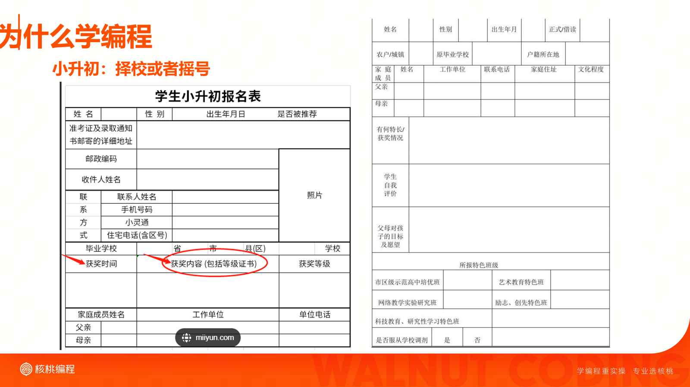
在和家长沟通升学规划时，我们要分清不同升学节点：小升初、初升高、高考。但大家要结合我们学员的年龄来看，图形化算法学员以 5 岁–2 年级为主，中考、高考距离孩子周期很长，离他们最近的关键节点是小升初。因此，我们和家长沟通，切忌一次性把全阶段升学路径全部抛出，而是聚焦当下，向家长说明：在现阶段的升学环境里，编程能够为孩子带来的实际价值。很多家长都会提出疑问：小升初没有科技特长相关政策。这里我们要给家长做好专业解读：并非国家不重视科技素养的发展，而是小升初属于九年义务教育范畴，义务教育实行免试就近入学，政策层面不允许选拔性筛选；中考、高考才属于选拔性考试。现阶段义务教育主流入学方式为对口、摇号。同时我们也要客观传递一个核心逻辑：部分学校在收集学生综合素质材料时，会参考孩子的综合履历。同等条件下，拥有正规科创赛事奖项的孩子，综合素质展示会优于无奖项的孩子，奖项含金量越高，履历的差异化优势越明显。当下很多孩子的兴趣集中在艺术、体育等方向，而编程能力需要长期系统学习，很难靠短期突击速成。在众多兴趣赛道里，科技特长是稀缺的硬核能力，能够帮助孩子建立区别于其他同龄人的差异化竞争力。
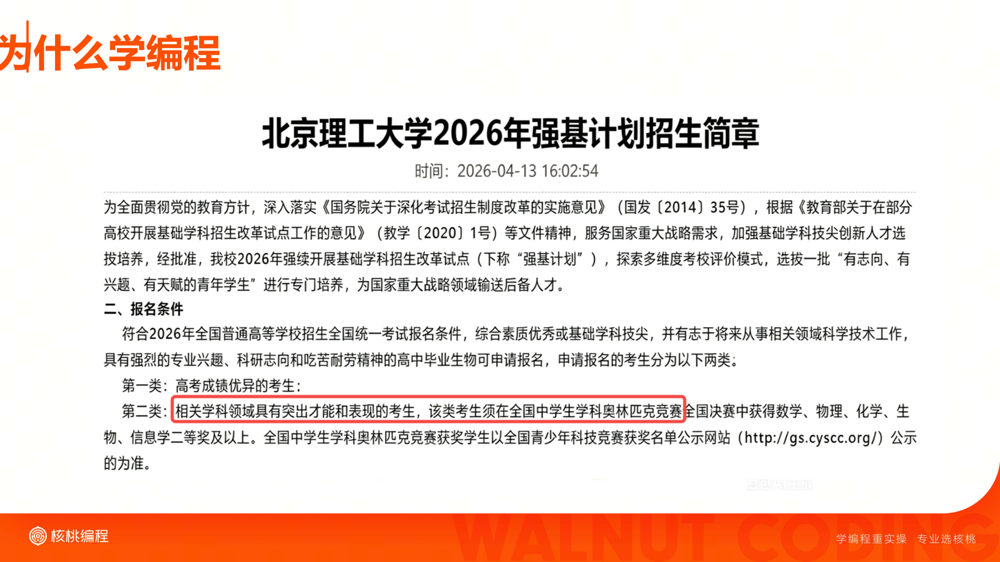
讲完政策层面的外部趋势之后，我们还要帮家长厘清一个认知：编程是一门学科能力，而不是一个可有可无的兴趣班。我们可以用高校高度认可的奥赛体系来举例。大家熟悉的五大学科奥赛，分别是数学、物理、化学、生物、信息学。其中信息学奥赛，也就是我们常说的信奥赛，核心考察内容就是编程。从高校的招生简章里也能看到，数学、物理、化学、生物、信息学这几类学科竞赛，是放在同一序列里被认可的。这里面的信息学，对应的正是少儿编程所学的编程内容。这也说明，编程并不是课外消遣类的兴趣班，而是和数学、物理一样，属于被教育体系和高校认可的学科方向。我们可以通过这个角度，向家长再次强调编程学习的重要性和长期价值。刚刚我们从时代环境、国际趋势、人才需求变迁、特长生赛道，再到信息学的学科定位，完整梳理了外部层面的逻辑。所有这些外部信号，共同印证：编程教育不是一时兴起的课外热点，而是顺应科教强国战略、全球同步推进的基础教育方向。外部大势我们已经梳理清楚，接下来，我们把视角从大环境收回到孩子身上，一起来看学习编程，会给孩子带来哪些底层能力的提升，也就是我们接下来要讲的内部因素。来看一道题，北理工强基简章中，第二类考生须在全国中学生学科奥林匹克竞赛全国决赛中获得什么奖项？
互动题
北理工强基简章中，第二类考生须在全国中学生学科奥林匹克竞赛全国决赛中获得什么奖项？
- A. 全国二等奖及以上
- B. 全国三等奖及以上
- C. 全国一等奖
- D. 市级三等奖以上
选错后：仅弹正确提示继续
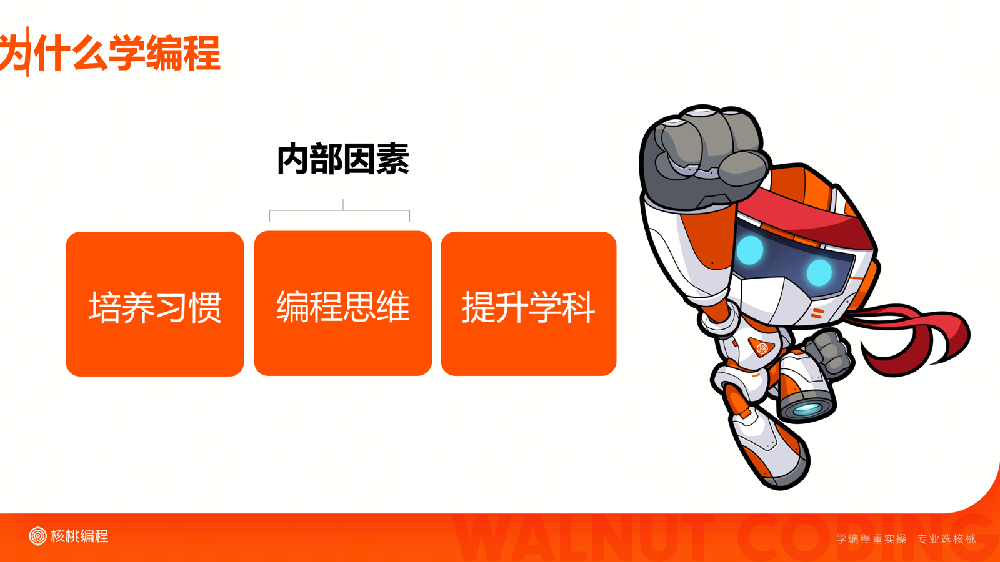
刚才我们重点讲解了学习编程的外部因素，也就是各项政策与时代趋势。这些属于长期发展优势，能够为孩子后续的中考、高考乃至长远职业发展提供支撑。讲到这里，我们可以思考一个问题：如果孩子现在读小学二年级，家长只听到 “编程对中高考有帮助”，会不会立刻产生报名意愿？多数情况下，家长并不会马上行动。大家的顾虑，也正是家长真实的心态：政策虽然利好，但这份收益距离当下太远。我们的学员大多集中在 5 到3年级，以小学生为主。孩子目前年纪尚小，几年之后的升学环境存在不确定性，孩子能不能坚持学到那个阶段，也是未知数。这也提醒我们：只讲政策、唤醒重视还不够，更要聚焦当下，和家长聊清楚眼前的收获 —— 孩子现在学习编程，立刻能获得哪些能力上的提升。这才是家长当下最关心的内容。本节课我们就来讲解学习编程的短期好处，也就是内部因素。内部能力提升与外部政策趋势相辅相成：外部大势指明方向，内部成长支撑孩子走得更远。家长大多已经听过三个关键词：培养习惯、锻炼思维、提升学科。我们的工作不只是简单告知家长有这些益处，更要讲清楚背后的逻辑：编程究竟如何培养学习习惯，又怎样具体助力数学、英语等学科的提升。我们要用真实、具体的案例，把价值讲透，让家长真正认可：孩子为什么要学编程，以及为什么现在就要开始学习。
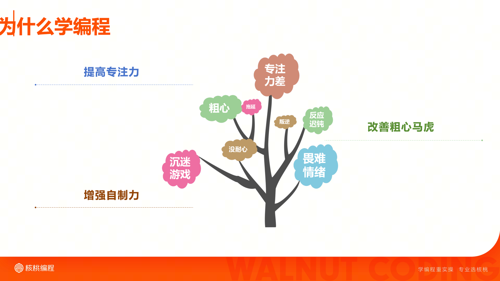
先看学习习惯。图上这棵树挂满了影响学习的问题：专注力差、粗心、拖延、叛逆、反应迟钝、没耐心、畏难情绪、沉迷游戏。今天我们挑最有代表性的三个，讲清楚编程是怎么解决的，分别对应提高专注力、改善粗心马虎和增强自制力。第一个是专注力差。表现是上课、写作业时东张西望，玩一会儿笔写一个字。为什么孩子学习时坐不住，看动画片却能一动不动？主要是兴趣问题，动画片声光效果丰富、剧情抓人，写作业相对枯燥，孩子自然难以投入。第二个是粗心马虎。这个场景大家都不陌生：题目上的数字8，抄下来变成了0；简单的英语单词总是拼错。这些问题往往不是孩子不会，而是出在粗心上。粗心的根源其实很简单，就是孩子从小没有建立起检查的习惯。考试时总有一些聪明的孩子，一小时的卷子三十分钟就做完了，剩下的时间在摆弄笔袋、给橡皮戳洞，就是不去检查，走过去一看，口算题还有空着的，应用题也没写答。更关键的是，现在很多家庭里，检查作业的任务落在了家长身上，孩子就更缺乏主动检查的意识。第三个是自制力。很多家长反映，孩子一拿起手机、一打开电脑，就沉浸在游戏里抢不回来，不让玩就偷偷玩，亲子关系也变得紧张。这个问题编程是怎么解决的，我们稍后结合视频来看。来看一道题，孩子「粗心马虎」的根源是什么？
互动题
【单选】孩子「粗心马虎」的根源是什么？
- A. 孩子从小没有建立起「检查」的习惯
- B. 孩子智商不够
- C. 题目太难
- D. 老师讲得不好
选错后：仅弹正确提示继续
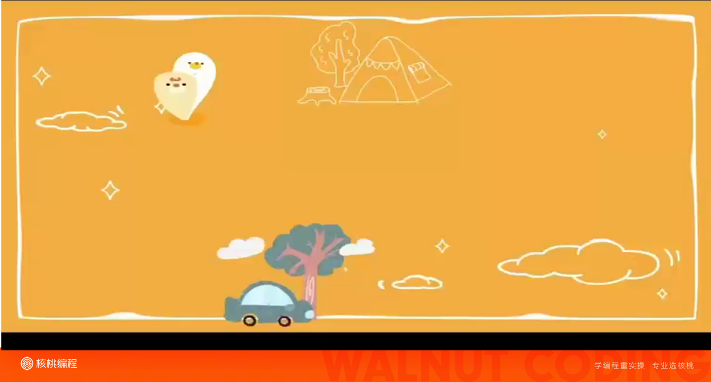
先说专注力。我们通过一段视频，看看核桃编程的课是什么样的。大家边看边想：这样的课，孩子为什么坐得住。
第一，用兴趣吸引注意力。视频里大家能感受到，我们的课程是任务制的，每个知识点都穿插在动画剧情里。大家想想，小学阶段的孩子，是更喜欢看动画，还是看纯文字、听老师干讲？而且我们把长时间的学习拆成一个个短小的任务，孩子像闯关一样往前走，自然不容易走神。第二，用拆解降低难度。编程会让孩子一口气写完所有代码吗？不会。就像那个经典问题，怎么把大象放进冰箱？要拆成打开门、放进去、关上门三步。我们的课程也是这样，引导孩子把大难题拆成小关卡，循序渐进，孩子就不容易因为畏难而放弃。第三，用及时反馈激励坚持。每通过一个关卡，系统都会给出即时的正向反馈和鼓励。这种我做到了的成就感，会激励孩子主动挑战下一关，在不知不觉中延长专注学习的时间。跟续费家长沟通时，可以请家长回想一下，孩子这六个月上课时能不能一直跟下来，这就是最有说服力的例子。来看一道题，核桃编程用什么方式吸引孩子的注意力？
互动题
【单选】核桃编程用什么方式吸引孩子的注意力？
- A. 课程任务制，每个知识点穿插在动画剧情中
- B. 延长单节课的时长
- C. 反复抄写代码
- D. 用考试排名施压
选错后：仅弹正确提示继续
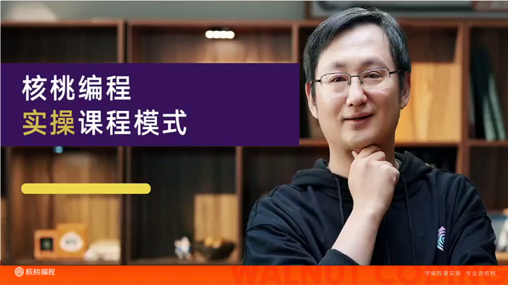
再来看自制力，也就是沉迷游戏的问题。核桃编程的思路是四个字：堵不如疏。我们不是一味禁止孩子玩游戏，而是通过编程，引导孩子从游戏的消费者，转变成游戏的创造者，成为整个课堂的主人。当孩子开始学怎么设计关卡、布置场景、设置人物和触发条件，视角就完全变了。孩子会去想：怎么让游戏更好玩？怎么让玩家跟着我的设计走？这种我来制定规则的掌控感和创造力，是比打通关更高级、更持久的成就感。这样一来，孩子对游戏的理解提升了，兴趣也从玩转到了造，既能缓解沉迷的问题，又把孩子的热情引导到了学习和创造上。我们一起来看一段视频，了解一下核桃编程的实操课程模式。
看完视频大家就明白了，核桃的实操课，就是让孩子从游戏的参与者，变成游戏的制作者。家长担心孩子沉迷游戏的时候，不要跟家长说别让孩子碰游戏，而是告诉家长，我们是把孩子对游戏的兴趣，转成做游戏的动力。来看一道题，核桃编程的哪种课程模式？
互动题
核桃编程的哪种课程模式？
- A. 实操课程模式
- B. 科技特长生实验班
- C. 知识点对标新课标
- D. 课程大纲涉及数学学科知识点
选错后：重讲本页重触发
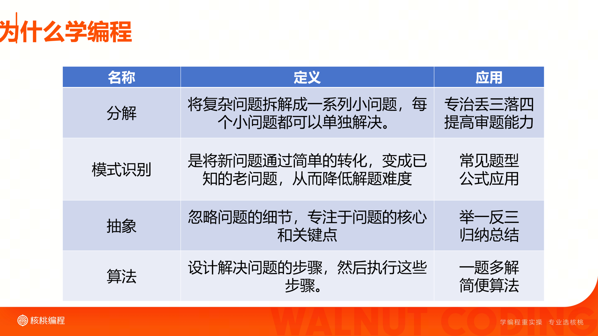
接下来讲编程思维。编程能锻炼思维，几乎是所有家长最看重的价值之一。但思维这个词听起来很高级，也特别抽象。听到逻辑思维，你脑子里能马上浮现出它具体的样子吗？大多数人都觉得有点模糊。没关系，我们先看这张表，编程思维可以拆成四个部分。第一是分解，把复杂问题拆成一系列小问题，每个小问题都能单独解决，用在学习上，专治丢三落四，提高审题能力。第二是模式识别，把新问题通过简单的转化，变成已知的老问题，降低解题难度，对应常见题型和公式应用。第三是抽象，忽略问题的细节，专注于问题的核心和关键点，对应举一反三、归纳总结。第四是算法，设计解决问题的步骤，然后执行这些步骤，对应一题多解和简便算法。后面我会用一道数学题，带大家看这四步在做题时是怎么发生的，在编程里又是怎么实现的。
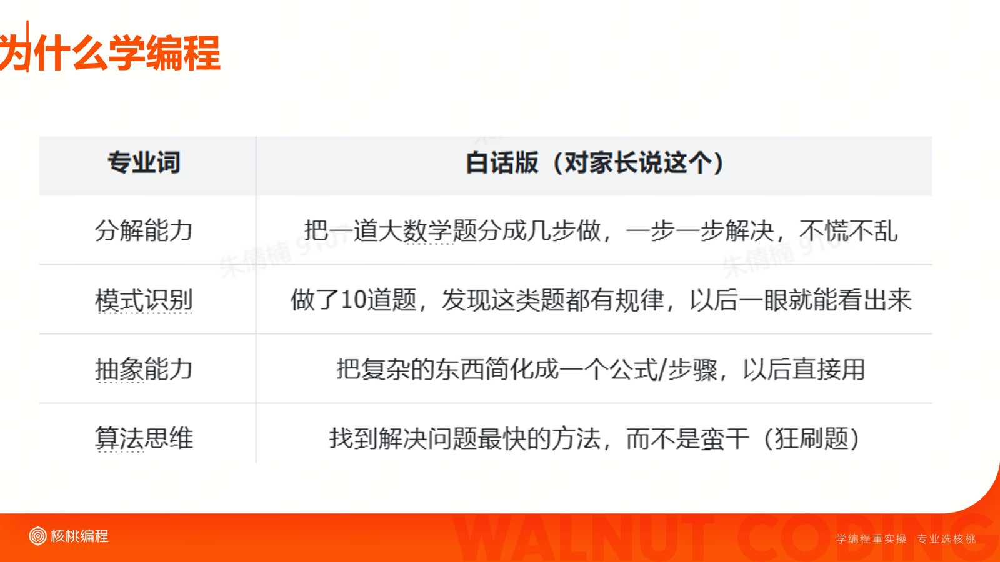
这张表是咱们跟家长沟通的话术库。家长听不懂专业名词，我们就用大白话翻译给家长听，这本身就是专业。分解能力，就是把一道大数学题分成几步做，一步一步解决，不慌不乱。模式识别，就是做了10道题，发现这类题都有规律，以后一眼就能看出来。抽象能力，就是把复杂的东西简化成一个公式或步骤，以后直接用。算法思维，就是找到解决问题最快的方法，而不是蛮干狂刷题。大家一定要把这四句白话记熟，跟家长聊的时候直接用。
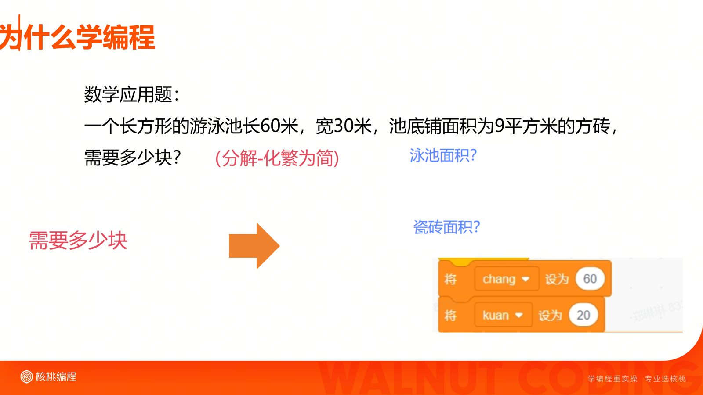
我们来看这道数学应用题：一个长方形的游泳池，长60米，宽30米，池底铺面积为9平方米的方砖，需要多少块？第一步是分解，也就是化繁为简。需要多少块这个问题，可以拆成两个小问题：泳池面积是多少？瓷砖面积是多少？先算出泳池的总面积，再用总面积除以单块方砖的面积，就能得到一共需要多少块。大家看右下角，对应到编程里，就是先设置变量，把长和宽定义好，后面再一步步写计算逻辑。
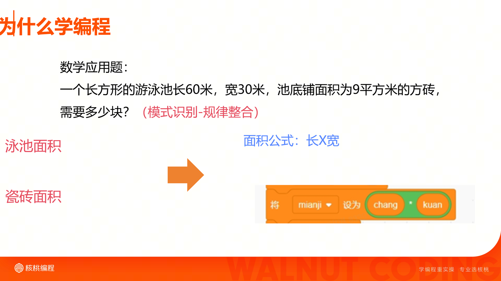
第二步是模式识别，也就是规律整合。求长方形面积有固定的公式：长乘以宽。对应到编程里，就是用一块积木让面积等于长乘宽，代入长和宽，直接算出泳池面积。这就是模式识别的思维：找到同类问题通用的规律和公式，下次遇到类似的题，直接套用就行。不管是做数学题还是写代码，找到固定规律，就不用每次从头想，效率会大大提升。
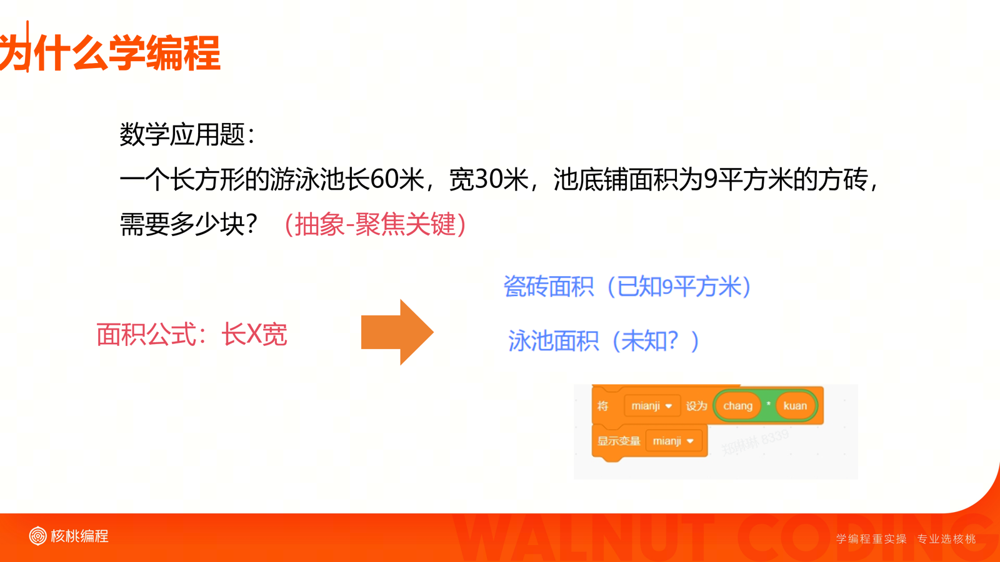
第三步是抽象，也就是聚焦关键信息。拿到题目，先把信息拆出来，哪些是已知，哪些是未知。方砖面积是已知条件，9平方米；泳池面积是要求的未知量。把无关的信息过滤掉，只抓住核心要素，代入长乘宽的公式计算。放到编程里，就是用变量算出泳池面积，再把结果显示出来。这种抽象思维，就是教孩子读题时快速抓住有用信息，排除干扰，找准解题核心，做数学题和写程序都离不开它。来看一道题，从泳池题里找出“瓷砖面积已知9平方米、泳池面积未知”，对应编程思维的哪一步？
互动题
从泳池题里找出“瓷砖面积已知9平方米、泳池面积未知”，对应编程思维的哪一步？
- A. 分解-化繁为简
- B. 模式识别-规律整合
- C. 抽象-聚焦关键
- D. 算法-逻辑整合
选错后：仅弹正确提示继续
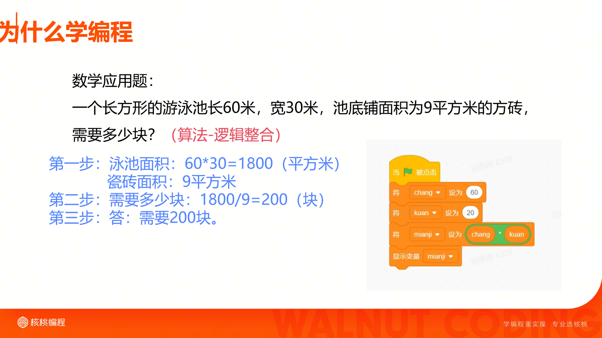
最后一步是算法，也就是逻辑整合，把完整的解题步骤梳理出来。具体计算时，先算出泳池面积，60乘30等于1800平方米，方砖面积已知是9平方米。接着用泳池总面积除以单块方砖面积，1800除以9，等于200块。最后写出答案：需要200块。右边的程序，就是把算泳池面积这一步按顺序写进去，点击绿旗，程序就一步一步执行。算法，就是一套有序、完整的步骤，一步一步完成目标。大家把这四步连起来看：先拆分问题，再用模式识别套公式，接着抽象出关键信息，最后用算法列步骤求解。数学应用题的解题思路，和编程写程序的逻辑完全一致，这就是为什么我们说编程思维可以直接用到校内数学上。以后家长问学编程对数学到底有什么用，你就拿这道题完整讲一遍，比空泛地说锻炼逻辑，说服力强得多。
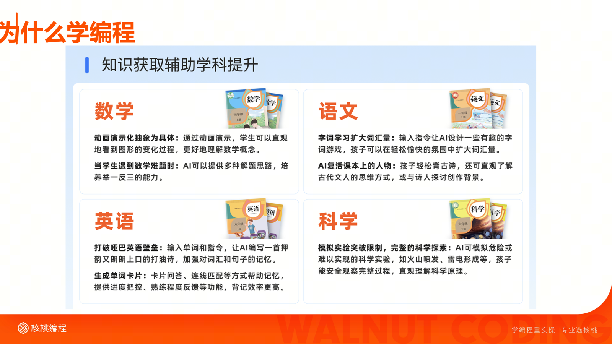
学科成绩，永远是家长最核心的关切。所以向家长介绍编程的作用时，我们要主动、清晰地把它和孩子的学科能力挂钩，把编程的价值转化成家长能立刻感知的学科优势。大家看这页，在知识获取上，编程和AI工具能从多个方面辅助学科提升。数学上，通过动画演示把抽象变具体，孩子能直观看到图形的变化过程，遇到难题时还能获得多种解题思路，培养举一反三的能力。语文上，可以借助有趣的字词游戏扩大词汇量，还能让课本上的人物复活，帮孩子轻松背古诗。英语上，可以生成押韵的打油诗和单词卡片，帮孩子记单词、记句子。科学上，可以模拟火山喷发、雷电形成这类危险或难以实现的实验，让孩子安全地观察完整过程。接下来我们挑语文、数学、英语，具体看看。
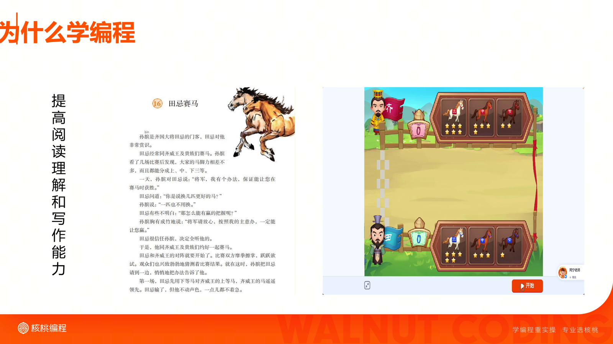
先看语文。左边是语文课本里的田忌赛马，右边是用编程做出来的田忌赛马。大家说，读一篇文章去理解田忌为什么获胜，和看着马一场一场比下来，哪个更容易理解？显然是后者，因为它把逻辑可视化了。而编程正是在训练这种能力，它要求孩子把文字描述的故事，像拍电影一样拆解成一步一步的逻辑指令。这直接锻炼的，就是语文学习需要的阅读理解和信息整合能力，对写作时把事情讲清楚、讲有条理也很有帮助。
大家可以一起来感受，我们借助少儿编程，把田忌赛马的故事完整复原出来。大家就能直观体会，这种方式是如何帮助孩子加深理解的。和单纯阅读文字、听故事相比，编程实现的版本画面感更强，逻辑过程可视化，抽象的策略变得直观，孩子理解起来会轻松很多。
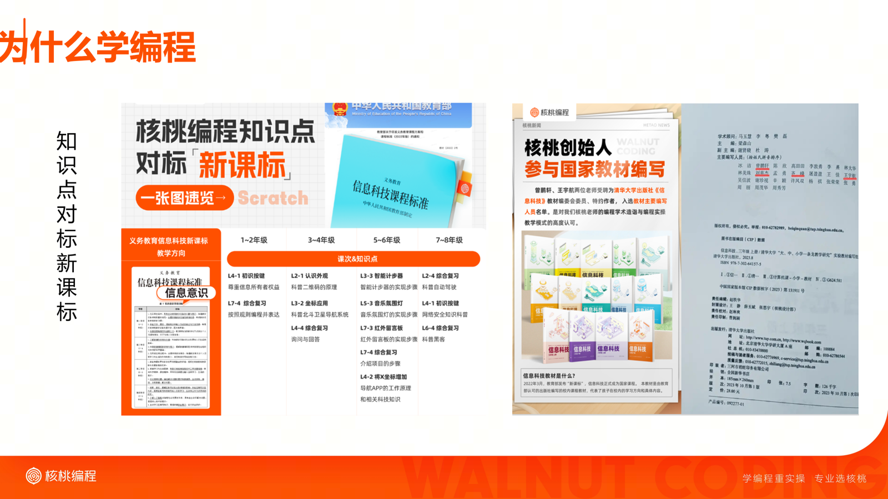
再说为什么核桃的课能和学科挂上钩。核桃编程的课程内容有很强的权威性和实用性。右边这张图，核桃创始人参与了国家教材编写，受聘为清华大学出版社信息科技教材的编委会委员和特约作者，这是对核桃教研专业度的高度认可。左边这张图是核桃编程知识点对标新课标，比如二维码原理、北斗卫星导航系统、自动驾驶这些知识点，都能在新课标对应的年级里找到。也就是说，孩子在核桃学到的，正是在学校里需要掌握、考试中会遇到的，做到所学即所考。另外，咱们课程有一个特色打法，叫以赛代练、以考促学。意思是，我们不是学完再去找考试，而是用比赛和考级来倒推学习节奏：每个阶段学什么、对标哪个等级的考试都很清楚，孩子边学边赛，每考过一级，信心和成就感就上一个台阶。家长最怕学了没结果，我们就让每个阶段都有看得见的里程碑。对续费家长来说，这一点很关键，孩子接下来每个阶段的目标都是清楚的。
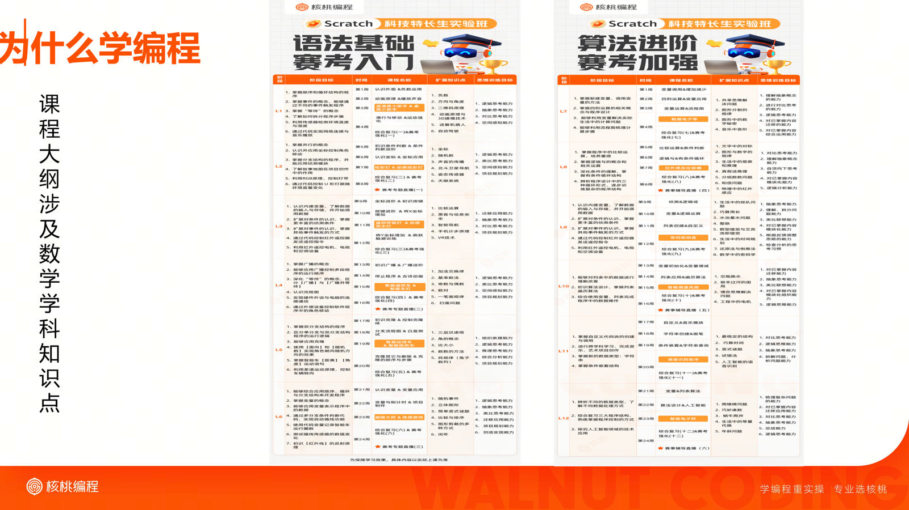
大家现在看到的是Scratch科技特长生实验班的课程大纲，分为两大模块：语法基础赛考入门和算法进阶赛考加强。整个课程一共十二个级别，前六级是语法基础，后六级是算法进阶，循序渐进。每一级都配有阶段目标、课程内容，还有扩展知识点和思维训练目标。课程里融入了大量校内数学知识点，比如坐标、角度、面积、数列、变量运算等等。所以这不是单纯在学编程代码，而是一边学编程，一边同步锻炼数学思维。大纲里还穿插了赛考专题直播，赛考入门打好基础，赛考加强拔高训练，一步步对接赛事，实现编程能力和校内学科能力的双向提升。跟续费家长沟通时，可以拿着这张大纲，让家长看清楚孩子已经学完了哪一段，接下来要学什么、能对接什么赛事。
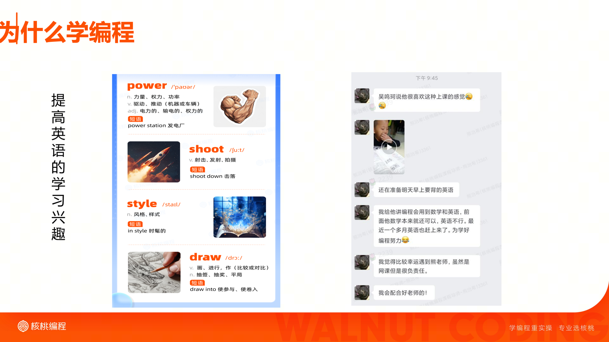
Python和C++会涉及到英语。编程里会大量接触英文单词，比如屏幕上的power、shoot、style、draw，都是编程指令里常用的词。孩子在写代码、做项目时，自然就记住了这些单词，不再是死记硬背。再看右边这段家长的真实反馈：孩子很喜欢这种上课的感觉，晚上还在准备第二天要背的英语；家长说孩子数学本来还可以，英语不太行，最近一个多月英语也赶上来了，就是为了学好编程在努力。用编程场景带动英语学习，孩子有目标、有动力，从被动背单词变成主动去学，英语学习兴趣自然就提上来了。
学编程有什么用？短期和长期缺一不可。大家看这页的标题，必学编程的两大理由：进则科技特长，退则数理化强。我们可以这样向家长传达：学编程，短期是提升学科成绩、改善学习习惯的助推器；长期是为升学增加筹码，形成短期打基础、长期拓出路的良性循环。先说短期，也就是提成绩。编程学习不是独立在学业之外的，它和学科表现紧密相连。数学上，强化逻辑思维，加深对抽象概念的理解，提升解题的条理和严谨性。语文上，通过编程里的逻辑构建和故事设计，增强阅读理解和写作表达。英语上，在代码环境里自然积累词汇，提升英文阅读能力。综合来看，编程过程还能同步改善学习习惯、提升专注力，全面提升学习素养。再说长期，也就是助升学。编程能力已经成为新时代人才选拔的重要参考，通过科技特长生、强基计划等渠道，孩子能在关键的升学节点获得额外竞争力，有机会进重点班、重点中学，冲刺985、211。同时，编程培养的计算思维、创新和解决问题的能力，也是孩子面对未来的核心素养。听完短期和长期，如果你是一位孩子刚学完第一阶段的家长，会不会愿意让孩子继续学下去？最后跟各位老师共勉：这些道理很重要，但更需要我们主动去讲。不能坐等家长自己想明白，而要把它融入每一次沟通，通过精准的提问，挖出家长对孩子思维和习惯的真实痛点和期待，再用我们准备好的案例和话术，把逻辑思维这样抽象的概念，变成家长听得懂、想象得到的画面。主动把价值传递出去，把家长的认同，变成孩子继续成长的机会。
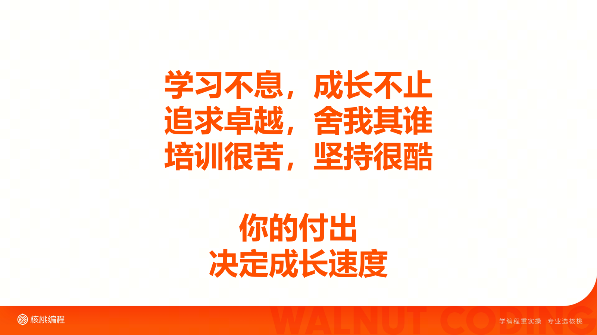
以上就是这节课的全部内容，大家都清楚了吗？我们快速回顾一下。编程是什么？是和计算机沟通的语言，把解决问题的步骤写成计算机能理解的指令。少儿编程语言怎么选？图形化、Python、趣味C++、C++，看年龄，也看目标。为什么学编程？外部看时代、政策和升学，内部看习惯、思维和学科。面对续费家长，外部因素帮家长看清长期方向，内部因素帮家长看到眼前收获，两者结合，才能帮家长坚定地让孩子长期学下去。最后送大家几句话：学习不息，成长不止；追求卓越，舍我其谁；培训很苦，坚持很酷；你的付出，决定成长速度。
最后，请大家拿出手机，扫一扫屏幕上的二维码，填写这节课的培训调研问卷，写下你的真实感受。
题库（阶段小测 + 综合测试）
T-S01 · 阶段练习题·单选 · 为什么学少儿编程·阶段1 · 答案 A
对Python的描述是？
- A. 代码入门，需要英语基础；运用比较广泛
- B. 入门简单，培养孩子的编程思维
- C. 可参加信息学竞赛，难度较高、功能强大
- D. 无需编程基础，无关英文单词
T-S02 · 阶段练习题·单选 · 为什么学少儿编程·阶段1 · 答案 A
编程中“我们”和“计算机”的分工是？
- A. 我们负责思考解决问题的步骤，并用计算机能理解的语言描述；计算机负责执行
- B. 计算机负责思考解决问题的步骤，我们负责执行
- C. 我们负责执行步骤，计算机负责描述步骤
- D. 计算机负责思考和描述步骤，我们只负责检查结果
T-S03 · 阶段练习题·多选 · 为什么学少儿编程·阶段1 · 答案 ABC
【多选】介绍的三种少儿编程语言是？
- A. Scratch
- B. Python
- C. C++
- D. Java
T-S04 · 阶段练习题·单选 · 为什么学少儿编程·阶段1 · 答案 A
不需要编程基础、不用记英文单词、适合 5 岁到小学二年级及以下孩子的语言是？
- A. Scratch
- B. Python
- C. 趣味 C++
- D. C++
T-S05 · 阶段练习题·判断 · 为什么学少儿编程·阶段1 · 答案 C
C++的使用年级是？
- A. 5岁-2年级及以下
- B. 3—6年级
- C. 7年级及以上
- D. 3—8年级
T-S06 · 阶段练习题·单选 · 为什么学少儿编程·阶段2 · 答案 B
全球已有多少个国家把编程纳入基础教育体系？
- A. 12 个
- B. 24 个
- C. 40 个
- D. 60 个
T-S07 · 阶段练习题·单选 · 为什么学少儿编程·阶段2 · 答案 B
2024 年少儿编程市场规模大约是多少？
- A. 188 亿人民币
- B. 488 亿人民币
- C. 988 亿人民币
- D. 1000 亿人民币
T-S08 · 阶段练习题·判断 · 为什么学少儿编程·阶段2 · 答案 A
P17时间轴中，2022年《义务教育课程方案和课程标准（2022年版）》明确了什么？
- A. 信息科技落实为全国统一开设的独立课程科目，在3-8年级开设
- B. 信息技术由兴趣课程变为必修课程
- C. 北京、广州等5个城市作为第一批试点
- D. 实施全民智能教育项目，逐步推广编程教育
T-S09 · 阶段练习题·单选 · 为什么学少儿编程·阶段2 · 答案 A
2024 年开始，哪一类特长生的招生通道明显收紧？
- A. 艺术类
- B. 体育类
- C. 学科类
- D. 科技类
T-S10 · 阶段练习题·单选 · 为什么学少儿编程·阶段2 · 答案 A
强基计划的参与高校是？
- A. 39所（全都是985）
- B. 90所（含87所211）
- C. 39所（含87所211）
- D. 90所（全都是985）
T-S11 · 阶段练习题·多选 · 为什么学少儿编程·阶段3 · 答案 ABC
“必学编程的两大理由”中，可以训练的效果是？
- A. 学习习惯
- B. 逻辑思维
- C. 专注力
- D. 重点班
T-S12 · 阶段练习题·多选 · 为什么学少儿编程·阶段3 · 答案 B
P31中，“将新问题通过简单的转化，变成已知的老问题，从而降低解题难度”指的是？
- A. 分解
- B. 模式识别
- C. 抽象
- D. 算法
T-S13 · 阶段练习题·单选 · 为什么学少儿编程·阶段3 · 答案 A
对家长解释“算法思维”的是？
- A. 找到解决问题最快的方法
- B. 把一道大数学题分成几步做，一步一步解决
- C. 做了10道题，发现这类题都有规律
- D. 把复杂的东西简化成一个公式/步骤
T-S14 · 阶段练习题·单选 · 为什么学少儿编程·阶段3 · 答案 A
用泳池铺砖题演示编程思维，四个步骤的先后顺序是？
- A. 分解→模式识别→抽象→算法
- B. 抽象→分解→算法→模式识别
- C. 模式识别→分解→抽象→算法
- D. 分解→抽象→算法→模式识别
T-S15 · 阶段练习题·单选 · 为什么学少儿编程·阶段3 · 答案 A
核桃编程曾鹏轩、王宇航两位老师受聘参与编写的是？
- A. 清华大学出版社《信息科技》教材
- B. 《义务教育信息科技课程标准（2022年版）》
- C. 《新一代人工智能发展规划》
- D. 《中小学人工智能教育》项目阶段成果
T-F01 · 本章综合测试题·单选 · 为什么学少儿编程·全章 · 答案 B
家长说：「编程离我家孩子太远了，他又不当程序员。」最合适的回答是？
- A. 确实很远，可以不学
- B. 支付宝、滴滴打车、公司打卡系统都是编程的成果，程序就在生活里，孩子是在理解身边的世界
- C. 程序员收入很高，值得学
- D. 学了就能进大厂
T-F02 · 本章综合测试题·单选 · 为什么学少儿编程·全章 · 答案 A
家长说：“政策是好，但孩子才二年级，我更想知道学编程对孩子本身有什么帮助。”应重点讲哪组“内部因素”？
- A. 培养习惯、编程思维、提升学科
- B. 时代背景、国家政策
- C. 强基计划、科技特长生
- D. 新课标、信息科技纳入中考
T-F03 · 本章综合测试题·判断 · 为什么学少儿编程·全章 · 答案 A
《义务教育课程方案（2022版）》里信息科技在哪些年级开设？
- A. 3-8年级
- B. 1-9年级
- C. 3-9年级
- D. 7-9年级
T-F04 · 本章综合测试题·单选 · 为什么学少儿编程·全章 · 答案 A
家长问“科技特长生有什么优势”，P22“科技特长生全解读”标注的三个关键词是？
- A. 官方政策、降分录取、锁定名校
- B. 全国竞争、严控名额、降分录取
- C. 本省竞争、没有限制、小班制
- D. 85%高考、15%校测、本硕博
T-F05 · 本章综合测试题·多选 · 为什么学少儿编程·全章 · 答案 ABC
【多选】考生可凭哪些学科的奥林匹克竞赛全国决赛二等奖及以上报名？
- A. 信息学
- B. 数学
- C. 物理
- D. 外语
T-F06 · 本章综合测试题·单选 · 为什么学少儿编程·全章 · 答案 B
核桃编程招生最小年龄不低于（≥）几岁？
- A. 6岁
- B. 5岁
- C. 4岁
- D. 7岁
T-F07 · 本章综合测试题·单选 · 为什么学少儿编程·全章 · 答案 B
小升初阶段，学校参考孩子综合素质材料时，最容易拉开差距的是什么？
- A. 兴趣爱好
- B. 获奖情况
- C. 身高体重
- D. 家长职业
T-F08 · 本章综合测试题·判断 · 为什么学少儿编程·全章 · 答案 B
编程只是一门兴趣班，与学科成绩、学习习惯没有关系。
- A. 对
- B. 错
T-F09 · 本章综合测试题·单选 · 为什么学少儿编程·全章 · 答案 A
社会对人才需求的变化顺序是？
- A. 劳动力→高知劳动力→创新
- B. 高知劳动力→劳动力→创新
- C. 创新→劳动力→高知劳动力
- D. 劳动力→创新→高知劳动力
T-F10 · 本章综合测试题·多选 · 为什么学少儿编程·全章 · 答案 ABCD
学习编程的短期收益包括哪些？【多选】
- A. 数学：强化逻辑思维、提升解题条理
- B. 语文：增强阅读理解与写作表达
- C. 英语：在代码环境中积累词汇
- D. 综合：改善学习习惯